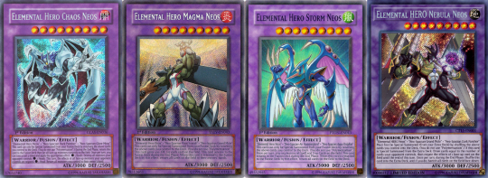
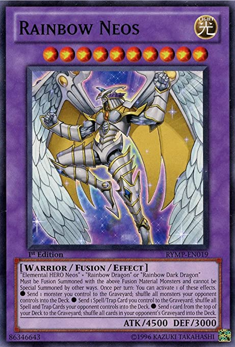
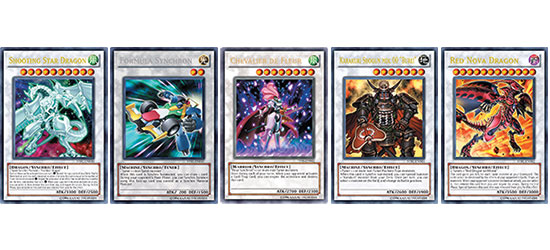
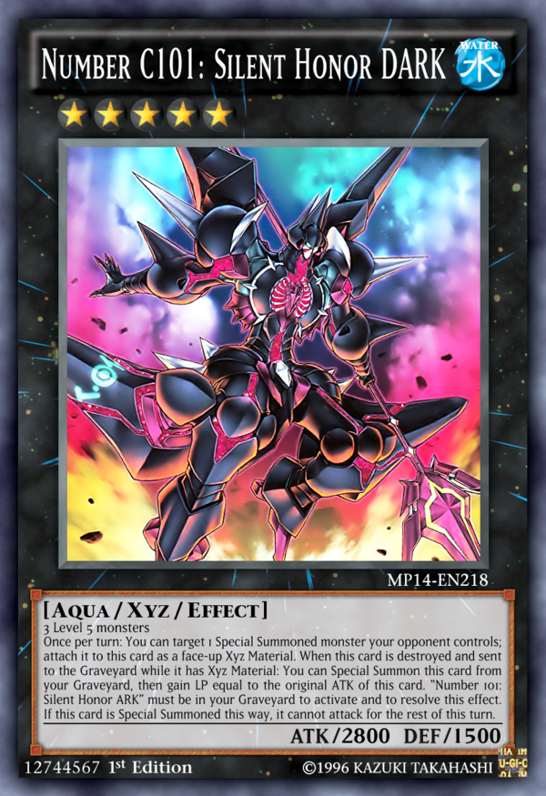
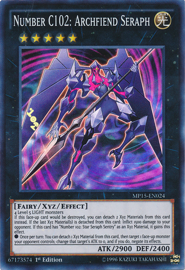
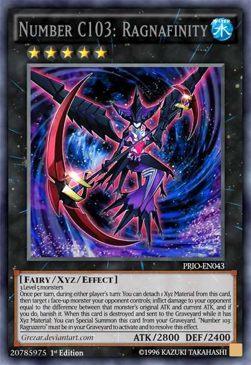
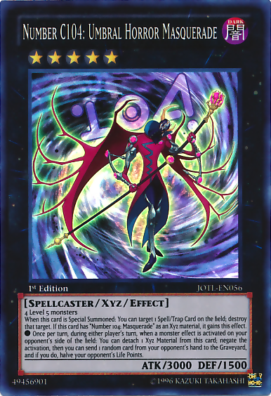
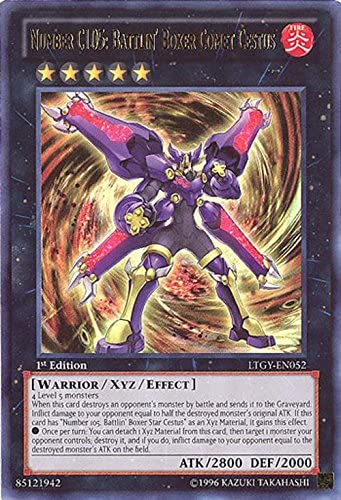
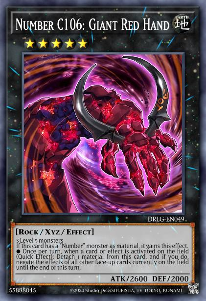
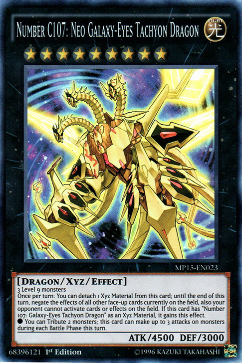

The extra deck (cap 15) is a bank where you special summon monsters from this category (fusion, synchro, xyz)
Fusion: Using Polymerization (A spell card for fusion summoning) you can take two or more monsters from your hand or field and summon a fusion monster with those materials from your extra deck.


Synchro: Using a tuner monster and other monsters on your field, you can synchro summon. The levels of the monsters must add up to the synchro monster you are trying to summon, and be the correct materials for said monster in order to be summoned from the extra deck.

Xyz: These monsters are summoned when you have two or monsters with the same level on the field. Overlay these monsters in order to summon an xyz monster from the extra deck. The level must correspond with the rank of the xyz monster, and be the correct materials in order to be summmoned.






